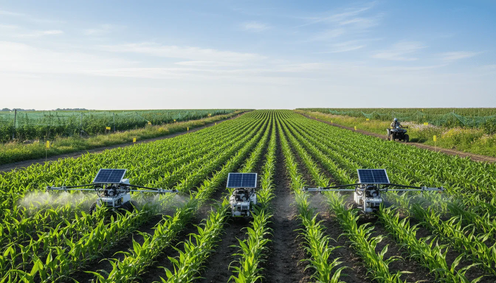

A transformação do campo
A agricultura moderna tem transformado drasticamente a forma como cultivamos e consumimos os alimentos. Com o aumento da população global e a necessidade crescente de métodos sustentáveis, a modernização da agricultura surge como um fator crucial.
O conceito de agricultura moderna refere-se à incorporação de tecnologias avançadas e práticas inovadoras na produção agrícola.
Ao contrário dos métodos tradicionais, que muitas vezes são mais manuais e menos eficientes, a agricultura moderna utiliza ciência e tecnologia para otimizar todos os aspectos da produção.
O que é a Agricultura Moderna?
O que impulsiona essa transformação é a busca por processos mais eficientes, sustentáveis e produtivos.
A agricultura moderna diferencia-se por integrar diversas tecnologias, como agricultura de precisão, drones, sensores aéreos, inteligência artificial e biotecnologia.
Esses elementos unem-se para formar um sistema agrícola mais robusto, capaz de lidar com os desafios do século XXI.
Desse modo, não se trata somente em tornar a fazenda mais tecnológica, mas de integrar dados e inovações de uma forma que torne a agricultura mais adaptável e eficiente.
Galeria Informativa



Principais Tecnologias Utilizadas
A agricultura moderna enfrenta desafios crescentes, como a necessidade de aumentar a produtividade para alimentar uma população global em expansão, ao mesmo tempo que preserva recursos naturais e reduz impactos ambientais.
Nesse cenário, tecnologias avançadas desempenham papel essencial na construção de sistemas agrícolas mais eficientes, inteligentes e sustentáveis.
A agricultura de precisão baseia-se na medição e análise de dados para otimizar o uso de recursos em uma fazenda.
Sensores e mapeamento detalhado permitem maximizar colheitas enquanto reduzem desperdícios e custos.
Cada plantação é tratada de forma individual, considerando necessidades específicas e promovendo sustentabilidade.
Equipados com câmeras e sensores especializados, drones monitoram propriedades rurais em tempo real.
Eles auxiliam na identificação de pragas, doenças e estresse hídrico com grande precisão.
A inteligência artificial analisa grandes volumes de dados relacionados ao clima, solo e produção agrícola.
Essa análise possibilita previsões mais precisas e decisões mais eficientes.
O produtor consegue antecipar cenários e otimizar sua gestão agrícola.
A modificação genética permite desenvolver culturas mais resistentes a pragas, doenças e mudanças climáticas.
Essas tecnologias aumentam a produtividade e fortalecem a segurança alimentar global.
Interação com o Leitor
Venha conhecer melhor a Agricultura Moderna
Inscreva-se no nosso formulário on-line.